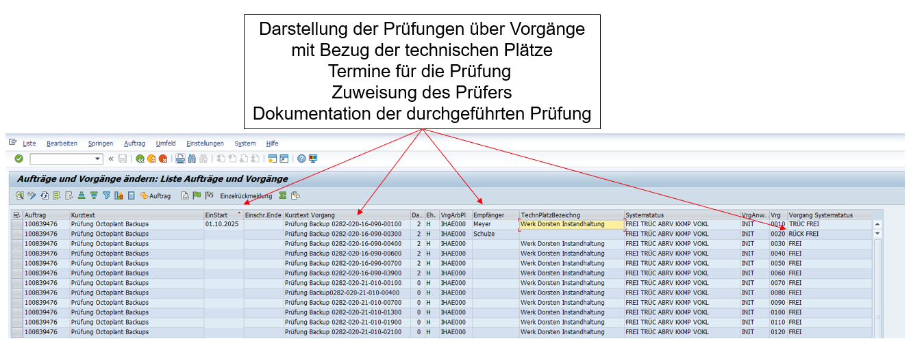
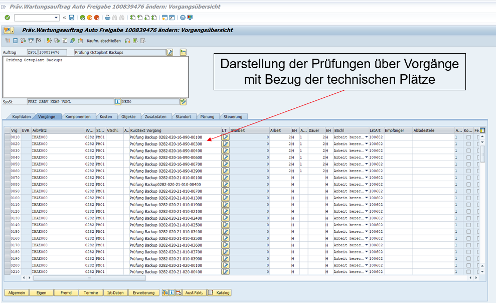

OT Backup Tests & Recovery Procedures
This chapter describes the standard operating procedure for conducting regular OT (Operational Technology) backup tests. The goal is to verify that backups stored in Octoplant are functional and can be successfully restored in an emergency — and to train personnel in the recovery process.
Overview
For many components of our production systems, we create backups that are archived in Octoplant — our central backup management tool. The primary purpose of this procedure is twofold:
- To ensure regular training of the recovery procedure so that personnel are prepared in an emergency.
- To verify that the available backups are functional and can be successfully restored.
1. Preparation of the Recovery Tests
Recovery tests are designed to ensure that, in the event of a disruption — for example, a PLC failure — the system can be quickly restored to an operational state. The tests must be planned carefully to avoid posing any sustained risk to production or causing unnecessary downtime, as this would contradict the purpose of the backup strategy.
1.1 Personnel Requirements
The personnel performing the recovery tests must possess the necessary qualifications. Specifically, they must:
- Be familiar with troubleshooting the respective components.
- Have experience operating the associated machines.
- Know all required access credentials and passwords (e.g., Siemens PLC general or safety passwords).
1.2 Component Requirements
Recovery tests should only be performed on components for which spare parts are available on-site in the event of a defect. The site must also have full access permissions to the component. For example, in the case of a Siemens PLC, any general or safety passwords must be known and available to the personnel conducting the test.
1.3 Time Window Requirements
A time window of at least two hours must be planned for performing the recovery tests, even though the process will typically take significantly less time. In practice, tests should only be conducted during:
- Maintenance shifts, or
- Sufficiently long planned system downtimes.
2. Execution of the Recovery Tests
The exact execution steps depend heavily on the specific component being tested and therefore cannot be defined in detail for all components. Based on the personnel requirements above, the general procedure should already be known to the employee performing the test.
It is important that different types of components are tested regularly — for example: S7-300, S7-1500, frequency converters from various systems — to ensure broad coverage of the plant's technology stack.
Always Create a Live Backup Before Starting
Before beginning any recovery test, a backup must always be created from the live system and stored securely. This ensures that, in case any issues arise during the test, the machine can be immediately restored to its exact previous state.
2.1 Selecting the Backup Version
The decision regarding which backup version to use for the test lies with the performing person. Possible options include:
Latest Available Backup
Use the most recent backup stored in Octoplant. This tests the most up-to-date data and is the most realistic scenario for an emergency recovery.
Backup from a Specific Date
Select a backup from a particular date — for example, after a known-good configuration was established. Useful for verifying historical restore points.
Older Backup for Testing Purposes
An older backup specifically chosen to test the full restore process, including any migration or compatibility steps that may be required.
3. Documentation in SAP
Every recovery test must be fully documented. The documentation must include the following information:
- Date of the test
- Name of the person performing the test
- Component tested (type, designation, location)
- Backup version used (date/label)
- Anomalies or issues encountered during the test
For this purpose, a monthly maintenance order must be created in SAP by the site. The order must be created at a one-month interval and should be prepared in a manner similar to the examples shown below.


Summary: Complete OT Backup Test Workflow
The following table summarises the six phases of the OT backup test procedure from preparation through to documentation:
| Phase | Action | Key Requirements |
|---|---|---|
| 1. Preparation | Schedule a test time window | Minimum 2 hours; during maintenance shift or planned downtime only. |
| 2. Verification | Confirm all prerequisites are met | Qualified personnel, spare parts on-site, full access credentials available. |
| 3. Safety Backup | Create a live backup of the current system | Mandatory. Store the live backup securely in Octoplant before proceeding. |
| 4. Execution | Restore the selected backup version | Choose: latest, date-specific, or older test backup. Follow component-specific restore procedure. |
| 5. Validation | Verify full operational status | Confirm the component and machine start up correctly and function normally. |
| 6. Documentation | Record the test in SAP | Log date, name, component, backup version, and any anomalies in the monthly SAP maintenance order. |